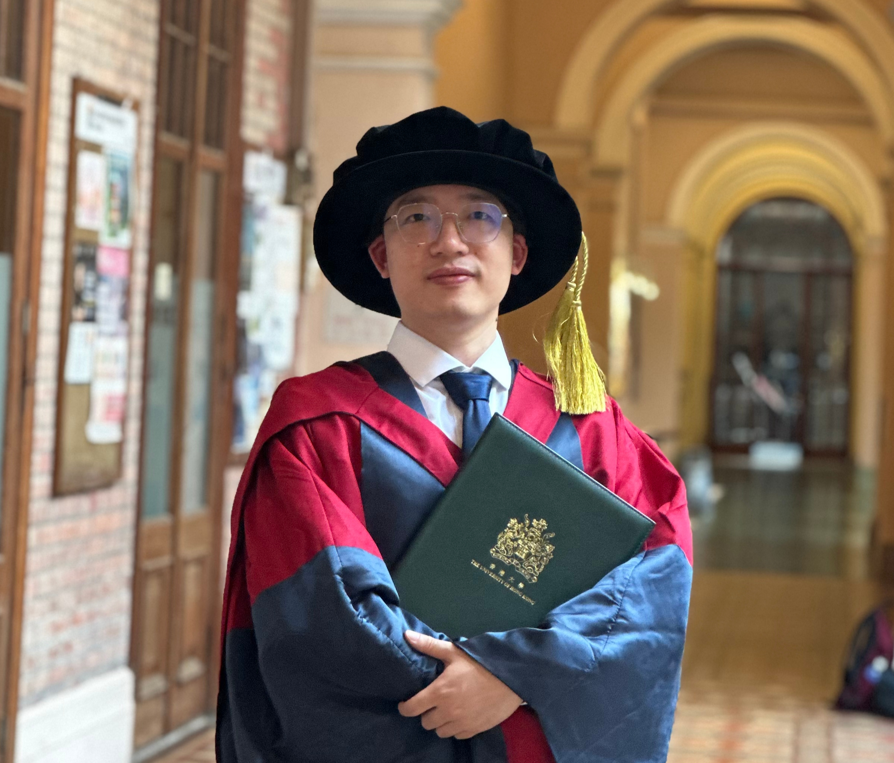

|
Zhenglong Li Hi! I am currently a Postdoctoral Fellow at The University of Hong Kong (HKU). Before that, I completed my Ph.D. and M.S. (with Distinction) at HKU, where I was fortunate to be advised by Dr. Vincent Tam and Prof. Lawrence Yeung. My research focuses on the intersection of AI and Computational Finance. Prior to that, I received my B.Eng. in Electronic Information Science and Technology and B.Econ. in Financial Engineering from Jinan University. During my studies, I had wonderful research experiences with Prof. Edward Tsang, Prof. Jianxing Yu, Dr. Albert Lee, Dr. Zhixi Li, Dr. Shengyu Zhang, Hejun Huang, and Songshi Dou. |
 |
{kind=link}
Research InterestsWith the fast-paced evolution of AI, there is tremendous potential for AI to address key challenges in quantitative trading. I'm passionate about designing AI-driven solutions that are both elegant and impactful, bridging the gaps between cutting-edge research and real-world financial applications. With a focus on developing robust AI frameworks based on deep reinforcement learning, multi-agent systems, metaheuristics, LLMs, etc., the topics I'm thinking about include
I'm actively looking for full-time or internship opportunities as a Quantitative Researcher or DL/ML Researcher in finance. Please feel free to reach out for job opportunities, research collaborations, or a casual chat via email: lzlongx [at] gmail [dot] com. |
Selected Publications (AI in Finance) |
|
Developing A Multi-Agent and Self-Adaptive Framework with Deep Reinforcement Learning for Dynamic Portfolio Risk Management
Zhenglong Li, Vincent Tam, Lawrence Yeung International Conference on Autonomous Agents and Multi-Agent Systems (AAMAS), Oral, 2024 Proposed a multi-agent optimization framework to effectively reduce investment risks while maximizing portfolio returns by the market observer, action planner and risk manager based on a new risk measure. |
|
A Multimodal and Sentiment-Based Trading System for Financial Portfolio Optimisation
Zhenglong Li, Vincent Tam, Lawrence Yeung IEEE International Conference on Consumer Electronics (ICCE), Oral, 2025 Designed a multimodal portfolio optimization framework by integrating financial language models and using confidence learning to carefully select valuable information from different news sources. |
|
Investor Preference-Aware Portfolio Optimization with Deep Reinforcement Learning
Zhenglong Li, Vincent Tam, Lawrence Yeung IEEE International Conference on Consumer Electronics (ICCE), Oral, 2025 Developed a constrained portfolio optimization framework that maximizes overall portfolio returns while satisfying different types of trading requirements from investors and stock exchanges by using heuristic search and deep reinforcement learning. |
|
Developing An Attention-Based Ensemble Learning Framework for Financial Portfolio Optimisation
Zhenglong Li, Vincent Tam International Joint Conference on Neural Networks (IJCNN), Oral, 2024 Applied transformer models and directional change analysis to extract spatial-temporal information of stocks from multiple granularities for managing portfolios. |
|
AdaGuiDE: An Adaptive and Guided Differential Evolution for Continuous Optimization Problems
Zhenglong Li, Vincent Tam Applied Intelligence, Journal, 2024 Proposed an adaptive metaheuristic optimizer based on guided search to handle complex continuous optimization problems. |
|
A Hybrid Optimization Framework with Dynamic Transition Scheme for Large-Scale Portfolio Management
Zhenglong Li, Vincent Tam Algorithms, Journal, 2022 Designed a hybridized metaheuristic optimizer for solving large-scale portfolios based on Sharpe ratios. |
Selected Publications (AI for Network) |
|
Oracle: QoS-aware Online Service Provisioning in Non-Terrestrial Networks with Safe Transfer Learning
Shengyu Zhang, Songshi Dou, Zhenglong Li, Lawrence Yeung, Tony Q.S. Quek IEEE International Conference on Computer Communications (INFOCOM), Oral, 2025 Aimed at optimizing the quality of services in networking like latency, throughput, and channel switch. |
|
Maintaining Predictable QoS for Online Service Provisioning in Non-Terrestrial Networks via Safe Transfer Learning
Shengyu Zhang, Songshi Dou, Zhenglong Li, Lawrence Yeung, Tony Q.S. Quek IEEE Transactions on Networking (ToN), Journal, 2025 |
|
SpaceCache+: Towards Pervasive Content Delivery via Low-Earth Orbit Mega-Constellations
Songshi Dou, Shengyu Zhang, Zhenglong Li, Jinxian Wu, Xianhao Chen, Lawrence Yeung IEEE Transactions on Services Computing (TSC), Journal, 2025 Targeted to reduce data transmission latency and save bandwidth in low-earth orbit satellite networks. |
|
A Coarse-to-Fine Grained Knowledge Refinement Framework for Network Intrusion Detection System
Zhenglong Li, Vincent Tam, Lawrence Yeung IEEE Region 10 Conference (TENCON), Oral, 2022 Designed a network intrusion detection system based on multi-granularity learning to prevent attacks. |
Patents |
|
Self-Adaptive Optimization Framework for Water Quality Prediction
Zhenglong Li, Laifa Fang US Patent, US20240295539A1, Granted |
|
Fine-grained Visual Content Search Platform
Chun Ming Chan, Zhenglong Li, Yi Ping Tse, Sung Ho Cheung US Patent, US20230325434A1, Granted |
|
An Application Authorization Method Based on Image Signatures
Jianxing Yu, Zhenglong Li Chinese Patent, CN109815745A, Granted |
|
Method and Device for Identifying Reported Screenshot
Jianxing Yu, Zhenglong Li, Minxiong Yu, Yingchao Yu, Kun Wang, Yi Feng Chinese Patent, CN111368838A, Under Review |
Selected Awards
|
MiscellaneousOutside of the research, I enjoy hiking, exploring different cities, and savoring authentic cuisine. |
|
Driving in the suburbs of Auckland |
City Center, Auckland |
N Seoul Tower, Seoul |
|
Victoria Harbour, Hong Kong |
Marina Bay, Singapore |
City Center, Las Vegas |
|
|